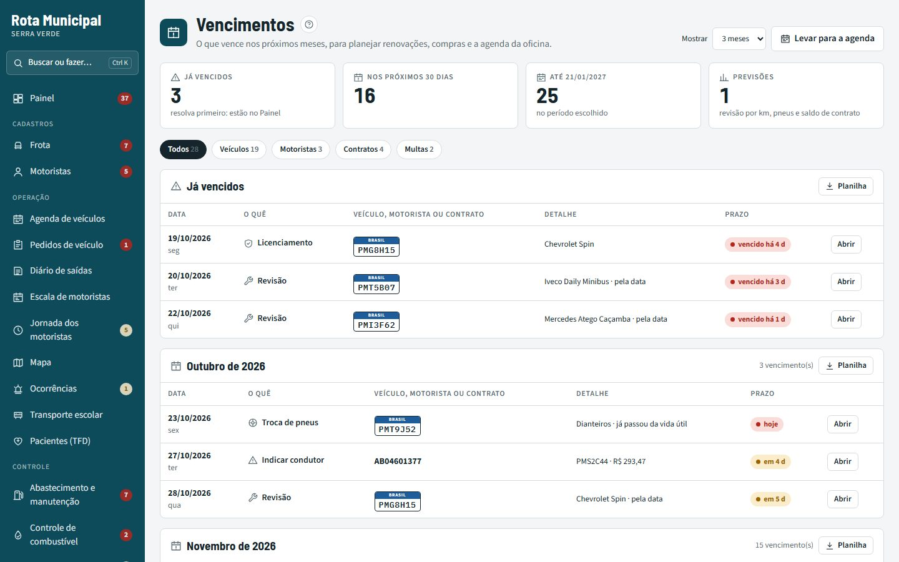
Frota e vencimentos
Revisão preventiva por km ou tempo, licenciamento, vistoria escolar, tacógrafo, seguro, extintor, CNH e exame toxicológico, mês a mês e na agenda.
Veículos, motoristas, transporte escolar, transporte de pacientes (TFD), combustível e manutenção, com um app para o motorista que funciona mesmo sem sinal na zona rural.

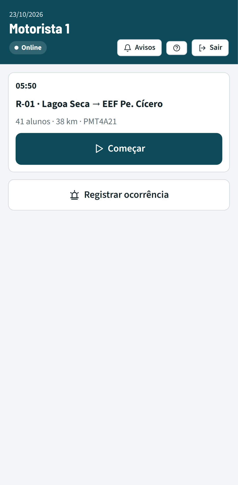
Isso gera veículo rodando com documento vencido, combustível sem controle, rota escolar sem motorista no dia, dificuldade para prestar contas ao PNATE e ao Tribunal de Contas, e nenhuma informação sobre onde o veículo está.
Cada secretaria vê só os seus veículos; o gestor de transportes vê tudo. Clique nas imagens para ampliar. Todos os dados mostrados são fictícios.

Revisão preventiva por km ou tempo, licenciamento, vistoria escolar, tacógrafo, seguro, extintor, CNH e exame toxicológico, mês a mês e na agenda.
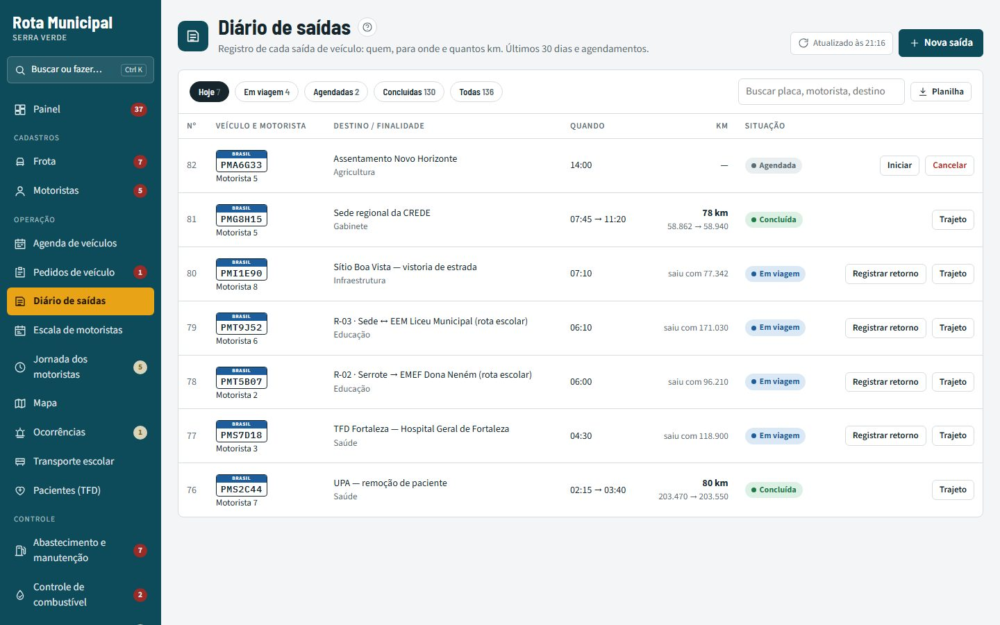
As secretarias pedem veículo, inclusive viagens que se repetem toda semana; o gestor aprova vendo quem está livre. Só sai veículo e motorista em dia.

Semana de cada motorista, conflitos de horário e substitutos nas rotas escolares.
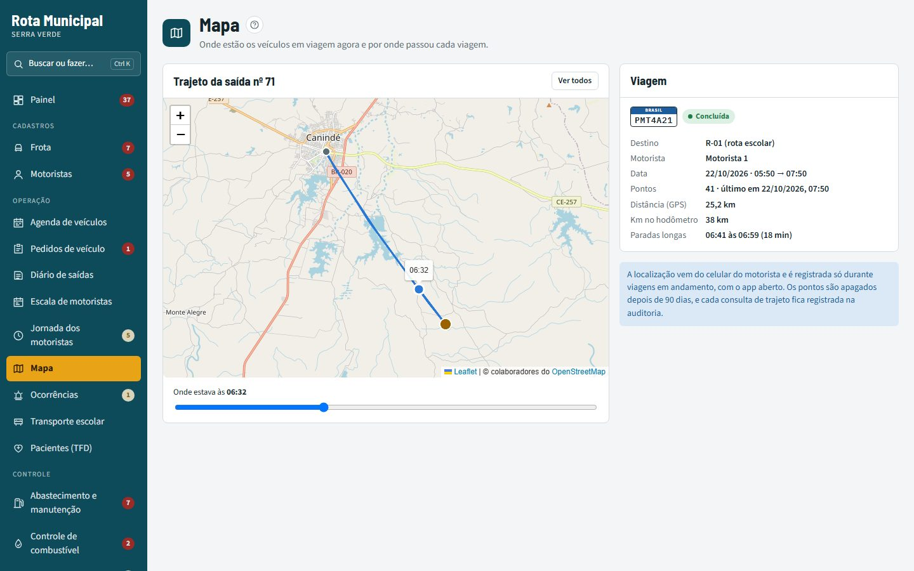
Onde cada veículo está agora e por onde passou: distância pelo GPS, paradas longas e barra de horário.
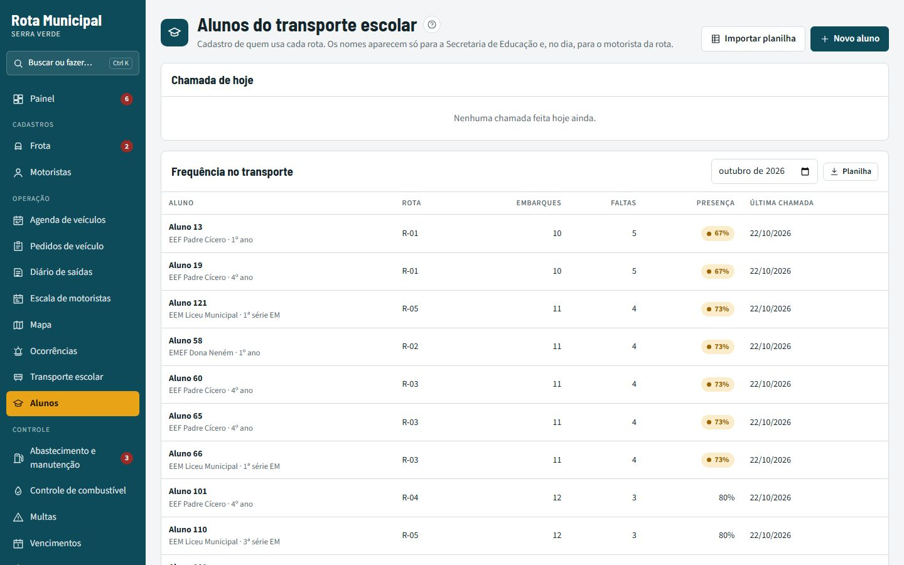
Rotas, paradas, cadastro de alunos e chamada no ônibus: a Educação sabe quem embarcou e quem faltou hoje.

Autorização para abastecer, aviso de abastecimento suspeito, conferência da fatura do posto e nota fiscal lida do XML.
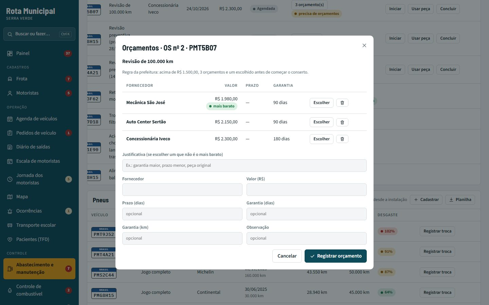
Ordens de serviço com três orçamentos acima do limite, garantia do serviço com aviso quando o defeito volta, estoque e pneus.

Quais veículos trocar pela idade, km, manutenção e panes, se compensa comprar ou alugar, e a baixa até o leilão.
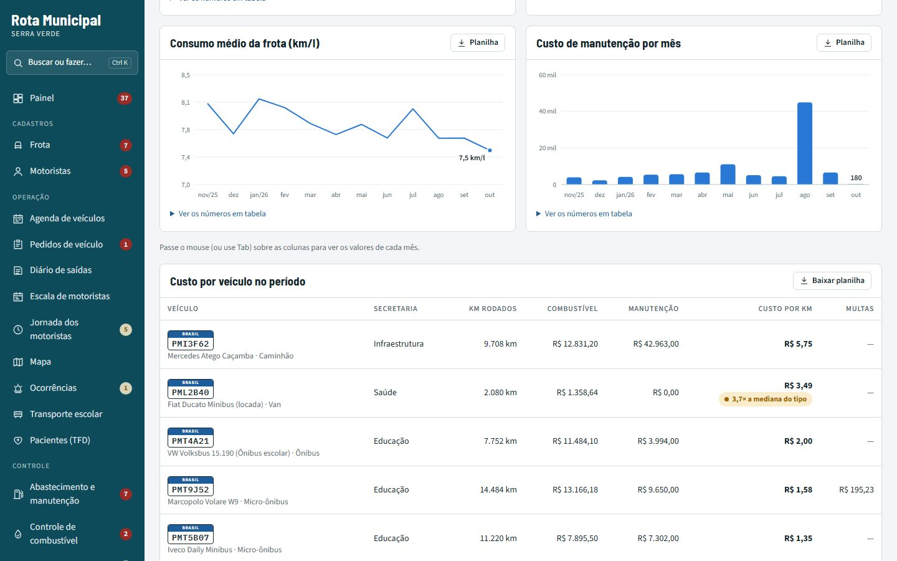
Gráficos de 6 a 24 meses e o custo por km de cada veículo, com aviso quando passa muito dos outros do mesmo tipo.
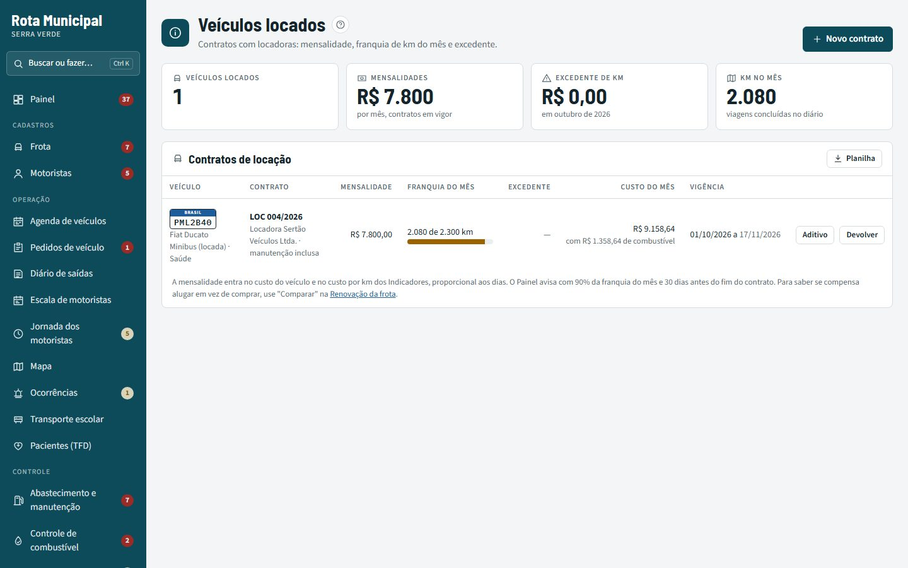
Contrato com a locadora, franquia de km do mês pelo diário e excedente; a mensalidade entra no custo por km.
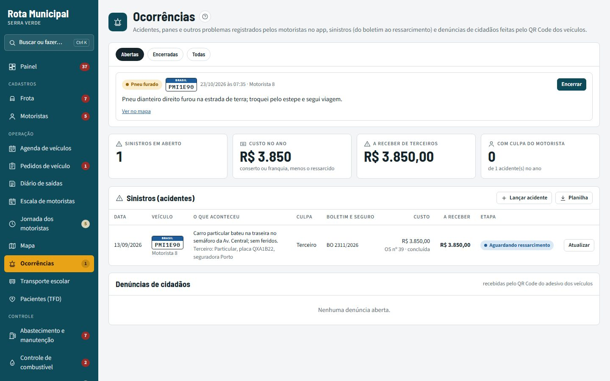
Acidente, pane ou pneu furado registrados pelo motorista com foto e localização; o acidente é acompanhado do boletim ao ressarcimento.
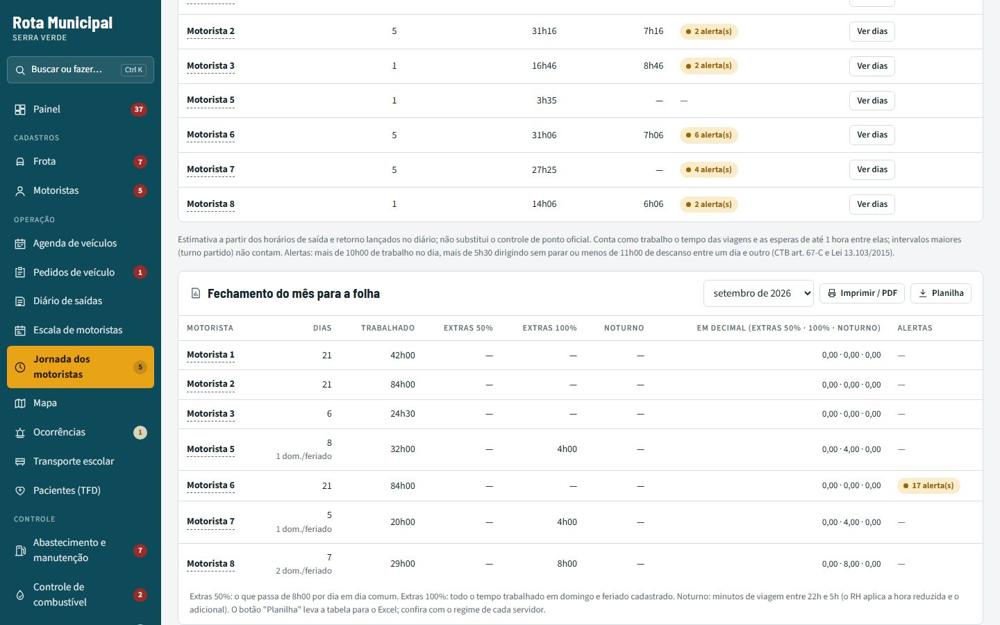
Horas trabalhadas, alerta de jornada longa e de pouco descanso (CTB art. 67-C) e o fechamento do mês para a folha: extras 50%, 100% e noturnas.
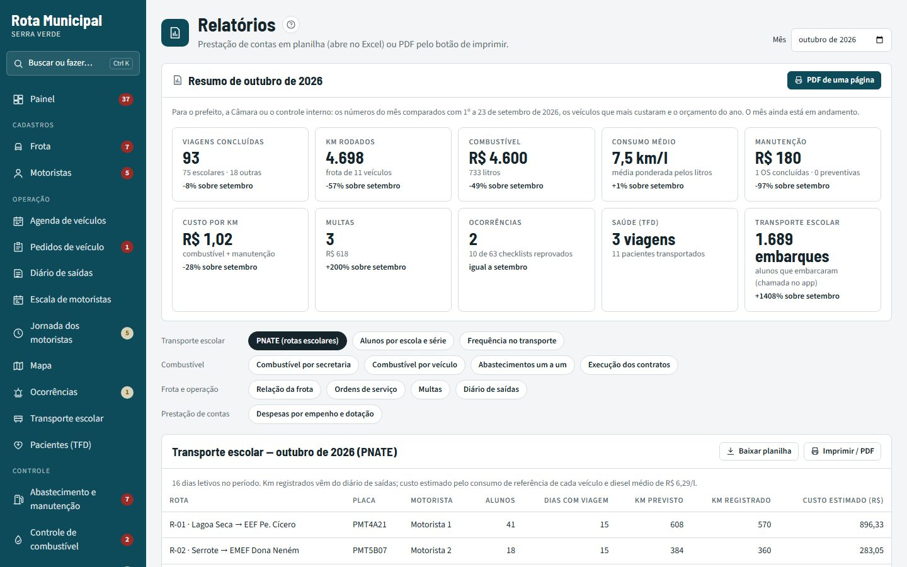
PNATE, combustível, abastecimentos, ordens de serviço, contratos, multas, diário e despesas por empenho e dotação para a contabilidade, em planilha ou PDF.
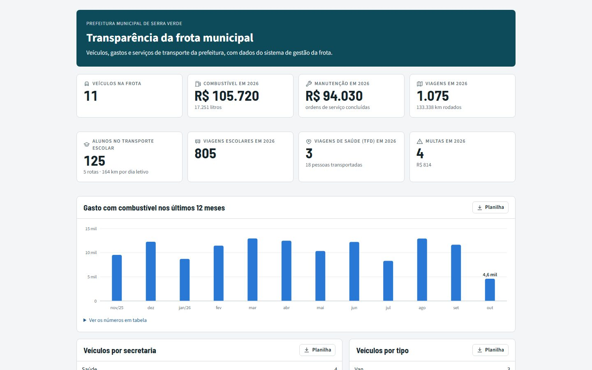
Página pública com os números da frota, sem nenhum dado pessoal, para o portal da transparência.
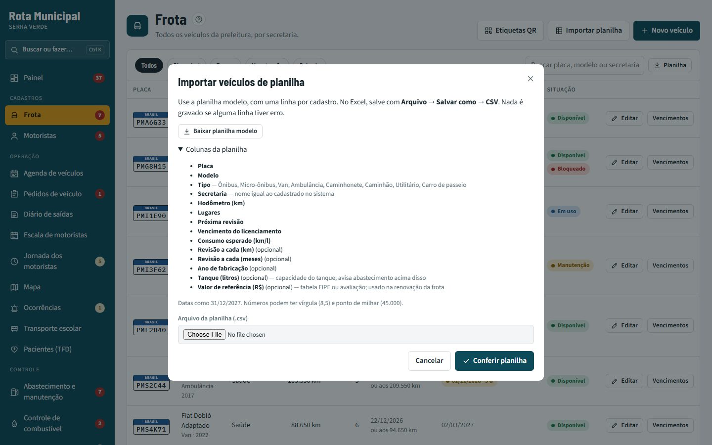
Veículos, motoristas e alunos importados da planilha do Excel, conferidos linha a linha antes de gravar.
O motorista instala o app pelo navegador, sem loja. Tudo o que ele registra fica guardado no aparelho e é enviado quando a conexão volta, sem duplicar nada.
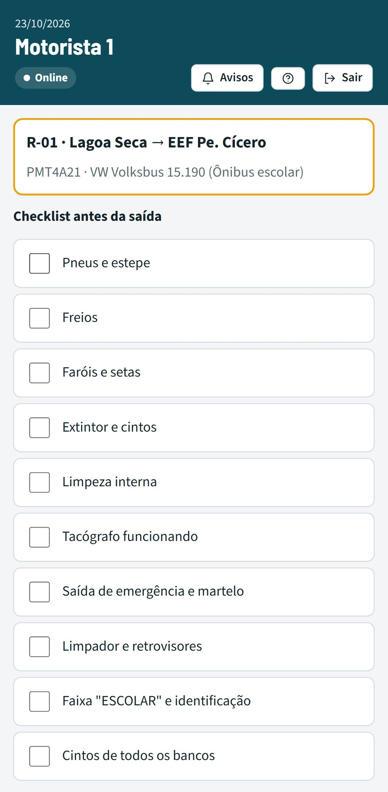
Checklist · item com defeito abre ordem de serviço e retém o veículo.
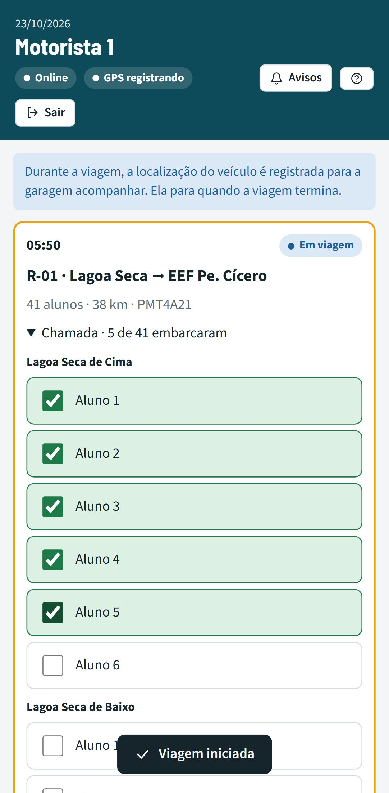
Chamada · quem embarcou em cada parada.
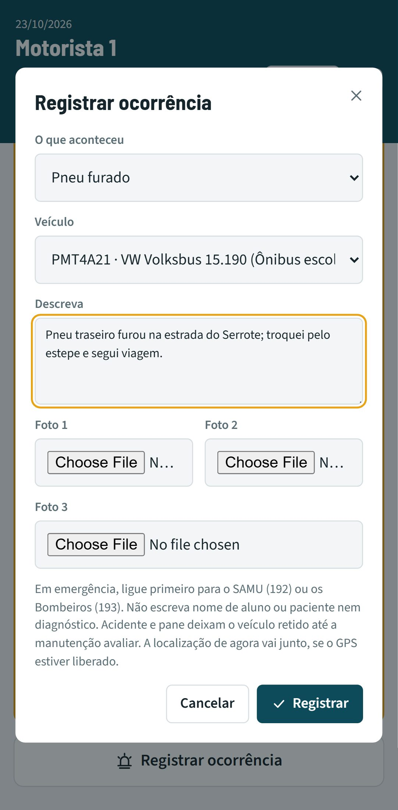
Ocorrência · com fotos e localização; a garagem é avisada.
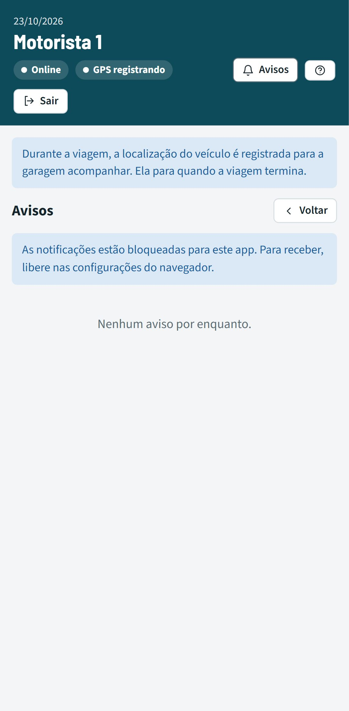
Avisos · escala mudou? Chega notificação no celular.
Gravação de um teste automático, num celular simulado:
Esse e outros testes rodam sozinhos a cada mudança no código, antes de qualquer atualização chegar à prefeitura. ✓ todos passando
Roda num servidor comum da prefeitura ou na nuvem, sem banco de dados separado para administrar. O app do motorista é instalado pelo navegador e funciona no Android e no iPhone.